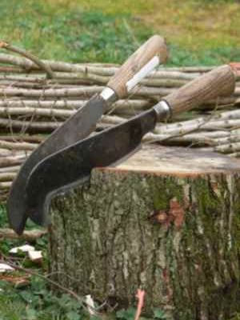
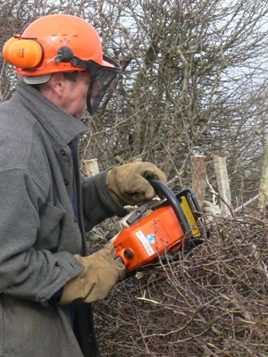

What is hedgelaying?
The origins and practices of hedgelaying
Hedgelaying is the art of cutting a stem partly through so that it will bend without breaking and will continue to grow. The traditional way of managing hedges throughout large parts of England and Wales, hedgelaying was originally carried out to contain livestock, such as sheep and cows. Hedges are now primarily laid to enhance the appearance of the hedge and to maintain habitats for the birds, animals and flowers which so enrich our visits to the countryside.
Hedgelaying involves cutting nearly all the way through the base of the stems and laying them over at an angle of about 35 degrees. The cut stems, called pleachers, are tucked tightly together and lay parallel to each other. Generally, hedges are then staked vertically and bound horizontally for strength and to achieve the thickest possible hedge. The hedgelayer can work with both hand tools and chainsaws, and normally stakes and binds the hedge with hazel. Managed in this way, hedges can last indefinitely.
The origin of hedges and hedgelaying
Hedges in some form have existed as long as man has cleared woodland for agriculture. Documentary evidence proves that there were hedges in existence in AD 800 which can still be seen today in England. But the laying of hedges is more recent in origin, and is linked to the process of Enclosure which transformed the English landscape throughout the Middle Ages. In 1603 the first Act promoting enclosure was passed, to be followed by over 5,000 separate Enclosure Acts enclosing over 7 million acres of open fields or common land. Enclosure acts specified that the plots of land they created be enclosed by hedges and ditches and maintained by the owner subsequently.
Oliver Rackham estimates that over 200,000 miles of hedge were planted between 1750 and 1850 and that this was as much as in the previous 500 years. Modern hedgelaying dates from that time in the eighteenth century. The word ‘hedge’ derives from an earlier word meaning bank - the division between strips of land in the mediaeval farming system. After the Enclosure acts, each man had to dig a ditch to create a boundary, piling up the soil on his side and planting bushes on the soil to keep livestock on his land. This ‘dogging down and stocking up’ was hard work so, when creating boundaries, the ditch was often left out (unless drainage was needed). Bushes were still planted and even if there was no bank they kept the name they have today: a hedge.
Planting 'on the flat', as opposed to setting the hedge on a bank, was rare before the 19th century. It first came into common local use in Yorkshire's Vale of Pickering where as early as 1785 hedges were made by digging a trench, setting the plants along the vertical side and then backfilling. But it was the advent of the railways which encouraged flat planting, for the engineers preferred their hedges unbanked and often unditched as well. Soon farmers in many areas adopted this practice, which was cheaper and often made for better growth. The old 'bank and ditch' was finally outmoded. Flat planting gradually evolved in its turn so that the most usual modern method is 'ditch and hedge'. In this method a ditch is dug beside the hedge and the hedge is planted on a bank which is so low as to be negligible compared to older banks.
Although some started calling for a reduction in the number of hedges even as enclosure was still taking place, on the grounds of efficiency, the number of hedges did not start to decline significantly until after the Second World War. In 1946 there were an estimated 500,000 miles of hedge in England.
The decline of the hedgerow in England
Hedgerows can only survive in the long term with correct management. Today, neglect and incorrect management are responsible for more hedgerow loss than outright removal, which is now less than new hedge planting.
It is estimated that there were 352,000 miles of hedge in England and Wales in 1984. By 1990 this had fallen to 270,000 miles and by 1993 to 236,000.
Resurgence of hedges and hedgelaying
Post-war agricultural policy changes gradually changed to reverse the loss of hedges through removal. A 1993 survey by CPRE revealed that far more hedges were being planted and fewer actively removed than for 1984-90. Hedgerow loss for the period 1990-93 was almost entirely due to changes of management, including neglect. However, by the latter part of twentieth century the value of hedgerows was well established, perhaps best illustrated in the enacting of the Hedgerow Regulations 1997 which give statutory protection to a limited number of important hedgerows.
The popularity of the craft of hedgelaying, perhaps not surprisingly, has mirrored the decline and rise of hedgerows throughout this time. This traditional country skill declined for much of the 20th century, and at one time looked as though it might even die out. However a revival in the late 20th century came from an influx of amateur hedgelayers who now keep the craft alive as a hobby, as well as a small but growing number of professionals who find their services in demand when landowners realise the aesthetic and historic value of a real laid hedge.
The Isle of Wight Hedgelaying Style
Hedges are laid in a variety of regional styles. The Isle of Wight has its own style, which is now very rarely practised.
In this style, the pleachers are laid fairly flat, to form a hedge roughly semi-circular in cross-section, about 3ft high and about 2ft wide. The pleachers are secured by crooks set on either side. Most laid hedges today on the Island are laid in South of England Style, including those laid during the IW Hedgelaying Competition.
Information on this page is largely drawn from Hedges in Our Landscape by Paul Blissett and The BTCV Hedging Handbook